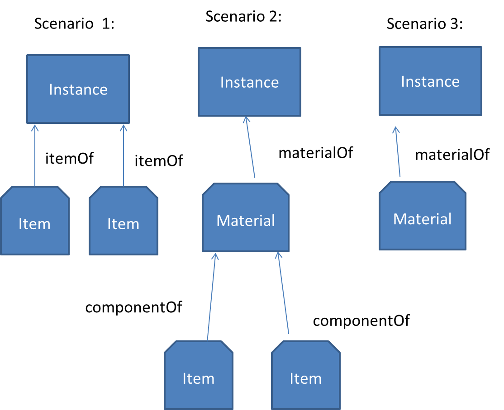
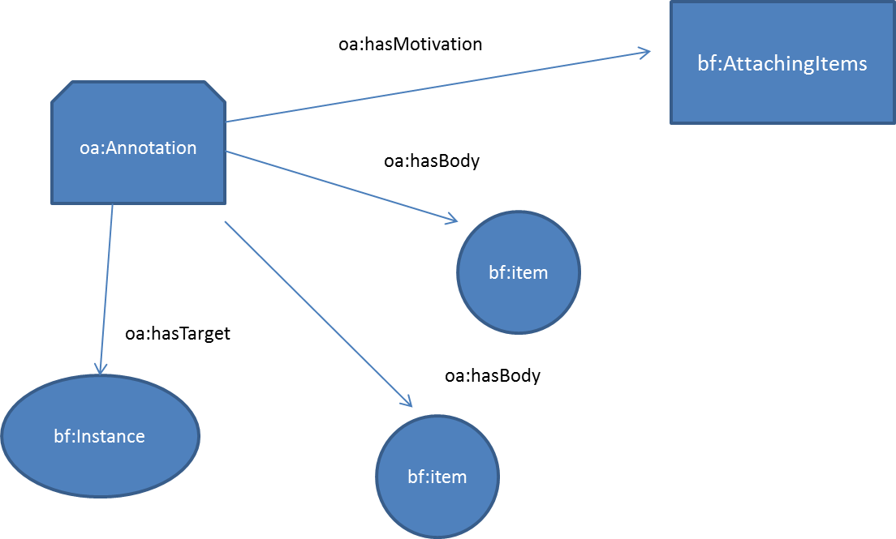
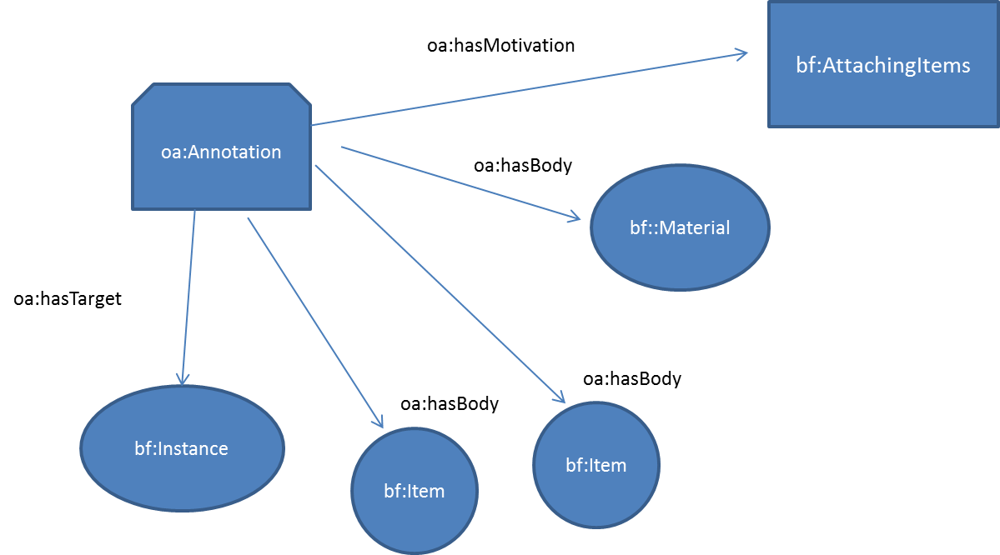
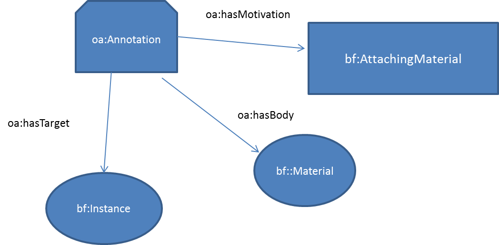

BIBFRAME Annotations
Introduction
An annotation asserts information about a resource. Comments on the web about photos, videos, and articles; reviews of restaurants and books -- these are considered to be annotations. When an annotation asserts information about a BIBFRAME resource, we refer to it as a BIBFRAME annotation.
An annotation involves three resources: (1) the annotation itself, (2) the annotation target, (3) the annotation body. The annotation points to both the target and the body, and conveys that the body is somehow "about" or "related to" the target. This is illustrated in the following diagram.

A book, for example, might be described by a BIBFRAME Work. There may be a review of that book. An annotation might be created to say that this resource -the review, is about that resource - the book. The Work is the target of the annotation; the review is the body.
.For a BIBFRAME annotation, the target is a BIBFRAME resource, typically a BIBFRAMEWork or a BIBFRAME Instance.
Relationship to W3C Work on Web Annotations
The W3C has chartered a Web Annotation Working Group (WG) to "define a generic data model for annotations, and define the basic infrastructural elements to make it deployable in browsers and reading systems through suitable user interfaces". BIBFRFAME is following this work closely, and though it is a work in progress, BIBFRAME intends to develop its annotation specification as a profile of the W3C work. The WG has published a draft Data Model and has prepared a draft Protocol. This document reflects both the W3C Data Model and the Protocol, and as such, is also a work in progress. BIBFRAME annotations will use the W3C Annotation Namespace http://www.w3.org/ns/oa# whenever possible and practical, to express properties, classes, etc. We use the prefix 'oa:' for this namespace. For example, annotations are members of the class oa:Annotation.
The W3C annotation work is referred to as "Web Annotations". Any BIBFRAME annotation will be a web annotation, however we'll use the term "web annotation" in this document specifically to refer to the W3C work.
Expressing the "aboutness" of an Annotation
An annotation is normally expressed for a reason. Web annotations refer to the reason as "Motivation". There is a partial list of web annotation motivations at http://www.w3.org/TR/annotation-model/#motivations. For example, if an annotation expresses a comment, then the motivation is "commenting". To express this motivation, the annotation uses the property oa:motivatedBy, whose object, oa:Commenting, is an instance of class oa:Motivation. This is a subClass of skos:Concept which allows us to define broader and narrower motivations. Any of the motivations in this table may be used as the motivation for a BIBFRAME annotation.
BIBFRAME class bf:Motivation is defined, a subclass of oa:Motivation, and its instances are motivations necessary for BIBFRAME, not supported by web annotations. Any external ontology is free to define a similar motivation class, for motivations that are not supported by web annotations or BIBFRAME.
Example of a BIBFRAME Annotation
A user wishes to comment on a BIBFRAME Work.
| <http://bibframe.example.org/annotation/annotationX> | ||
| a | oa:Annotation ; | |
| oa:hasTarget | <http://bibframe.example.org/works/callOfTheWildlife> ; |
|
| oa:motivatedBy | oaCcommenting ; | |
| oa:hasBody | "I like this book" ; | |
| oa:annotatedAt | "2015-15-15" ; | |
| oa:annotatedBy | <http://bibframe.example.org/authority/mrAnnotator> ; | |
| bf:annotationSource | <http://bibframe.example.org/authority/msCommentor>. | |
Annotation-Friendly Resources
Essentially the reasons for this spec are to:
- Provide the capability for users to annotate BIBFRAME resources.
- Ensure that BIBFRAME annotations are compatible with web annotations.
- Ensure that BIBFRAME resouces are "Annotation-friendly".
"Annotation-Friendly" is a term coined by this specification (not web annotations), and while web annotations provides support for friendliness, it isn't a high priority. A resource is "annotation-friendly" if it provides for a client to submit an annotation, and for a user to discover annotations for that resource.
The web annotation protocol (referenced above) provides a number of features and we will look at three here in particular:
- Party 1 creates a resource and makes it annotation-friendly
- Party 2 annotates that resource
- Party 3 finds annotations for that resource
Making a resource “Annotation-Friendly”
Sue creates a resource http://example.com /sues-resources/resource1 .
She creates an annotation container for the resource: http://example.com /sues-resources/resource1/annotations/
Annotation containers are described in the web annotation protocol. For purposes of this specification, it is prescribed that when you create a resouce and you intend that it be annotation friendly, create a resource whose URI is "annotations/" appended to the URI of the resource to be annotated.
Annotating the Resource
Fred has created and wants to submit an annotation for http://example.com/ sues-resources/resource1. He posts (via HTTP POST) the annotation to the container, http://example.com/sues-resources/resource1/annotations/ . As a result the server:
- Creates an annotation resource.
- Lists the URI of the created annotation resource in the container.
- Returns a response which includes:
- The submitted annotation, augmented with additional information, for example “oa:annotatedAt” (time of annotation).
- The URI of the created annotation.
Finding the Annotations
Finally, Lydia, a researcher, discovers resource http://example.com /sues-resources/resource1 and wants to find its annotations. She does an HTTP GET on http://example.com/sues-resources/resource1/annotations/, and the list of annotation URIs is provided.
BIBFRAME Item and Material as Annotations
BIBFRAME defines classes for physical items and material, bf:Item and bf:Material. These may exist independent of annotations, or they may be attached to BIBFRAME Instances via annotations.
Item
An Item is a physical materialization of an Instance. For example for the paperback Instance of a Work (a book), an Item would be a physical copy of that paperback. And just as there may be many Instances for a given Work, there may be many Items for a given Instance, which may all reside at a single institutions or may be spread across institutions.
Following is an example of a bf:Item.
| <http://bibframe.example.org/items/itemX> | ||
| a | bf:Item ; | |
| bf:ItemOf | <http://bibframe.example.org/instances/callOfTheWildlife> ; |
|
| bf:institution | <http://id.loc.gov/vocabulary/organizations/dlc> | |
| bf:subLocation | "Jefferson or Adams Building Reading Rooms" ; | |
| bf:callNumber | "PS3572.O5 B5 1987C" ; | |
| bf:copyNote | "Copy 157" ; | |
| bf:copyNote | "Signed by the author." ; | |
| bf:copyId | "71234" ; | |
| bf:accessCondition | "Access is restricted; consult library for details" ; | |
| bf:circulationStatus | "non-circulating" . | |
Material
A Material is a collection of objects. The objects might be Items of an Instance with some properties in common - e.g. same general location, access policy, etc. Or they may be physical manifestations of parts of the Instance, when an Instance is composed of many parts.
A Material exists for one of two possible reasons:
- There are a large number of Items represented by the Material, which summarizes information common to a the Items so that they do not need to be repeated in every Item.
- The Material is a summary description of the individual objects held by the institution, for an Instance.
Item and Material Scenarios
So there are three possible scenarios:
- An Item or Items not represented by a Material.
- A group of Items with a Material summarizing the Items.
- A Material which is a summary description of a group of objects, but no individual Items.
These three scenarios are depicted as follows:
Note that an Item is always either an item of an Instance, denoted by the itemOf property, or a component of a Material, denoted by the componentOf property. A Material is always a material of an Instance, denoted by the materialOf property.
Classes and Properties
Classes and corresponding properties are summarized in the following two tables.
Classes
Class |
SubClass Of |
Item |
Material |
Material |
Resource |
Properties
Property |
Property of |
Expected Value |
| barcode | Item |
literal |
| circulationStatus | Item |
literal |
| componentOf | Item |
Material |
| copyNote | Item |
literal |
| institution | Material |
Agent |
| itemId | Item |
literal |
| itemOf | Item | Instance |
| shelfMark | Item |
literal |
| shelfMarkDdc | Item |
literal |
| shelfMarkLcc | Item |
literal |
| shelfMarkNlm | Item |
literal |
| shelfMarkScheme | Item |
literal |
| shelfMarkUdc | Item |
literal |
| accessCondition | Material |
literal |
| electronicLocator | Material |
literal |
| enumerationAndChronology | Material |
literal |
| materialOf | Material |
Instance |
| lendingPolicy | Material |
literal |
| reproductionPolicy | Material |
literal |
| retentionPolicy | Material |
literal |
| subLocation | Material |
literal |
(Ed. Note:
- bf:Item and bf:Material replace what were formerly bf:HeldItem and bf:HeldMaterial. Those were subclasses of bf:Annotation. As of this draft there is no class bf:Annotation - BIBFRAME annotations are of class oa:Annotation. Item and Material are subclasses of bf:Resource. An Item or Material may exist with no connection to an annotation, or it may be asserted as an annotation.
- itemOf and materialOf replace holdingFor.
- institution replaces heldBy )
Scenarios for Item/Material as Body of Annotation
Scenario 1: Item Only, No Material
If an institution holds an Item and creates a bf:Item (with no corresponding bf:Material) then that Item is an Item of an Instance. A user, upon discovering the Instance, may want to find Items for that Instance. If the bf:Instance resides at the same institution as the bf:Item, then Items for that Instance can be found by a simple query ("find Items for this Instance). In this case there is no need to annotate the Instance Call this scenario 1A.
In scenario 1B, InstitutionX, http://institutionx.example.org/, upon acquiring a book, creates a bf:Item:
http://institutionX.example.org/bibframe/items/itemX
which describes that book. It needs to create, within the bf:Item, a link to a bf:Instance. But in this scenario, InstitutionX does not create bf:Instance descriptions. Instead, it has an arrangement with one or more remote institutions to attach its Items to their Instances. Now, let's say, as in scenario 1A, a user, upon discovering the Instance, may want to find Items for that Instance. The link from Item to Instance isn't going to help (and there is no reverse link, from Instance to Item). In this case we are going to want there to be an annotation, saying "this Item is an Item of this Instance". (In scenario 1A, such an annotation is not necessary). The annotation might look something like this:
| <...annotationXYZ> | ||
| a | oa:Annotation ; | |
| oa:hasBody | <http://institutionX.example.org/bibframe/items/itemX> ; | |
| oa:hasTarget | <http://institutionY.example.org/bibframe/instances/instanceXYZ> ; |
|
| oa:motivatedBy | bf:AttachingItems . | |
Note that the "motivation" is bf:attachingItems, in the BIBFRAME namespace.
If InstitutionX wishes to submit multiple Items for an Instance, it can submit multiple annotations, or it can submit a single annotation with multiple bodies. (Hence the pluralization of the motivation.) This is illustrated graphically:

Scenario 2: Items With Material
In this scenario, InstitutionX wishes to submit as an annotation a group of Items with a Material summarizing the Items. The annotation might look something like this:
| <...annotationXYW> | ||
| a | oa:Annotation ; | |
| oa:hasBody | <http://institutionX.example.org/bibframe/items/itemX> ; | |
| oa:hasBody | <http://institutionX.example.org/bibframe/items/itemY> ; | |
| oa:hasBody | <http://institutionX.example.org/bibframe/material/materialXY> ; | |
| oa:hasTarget | <http://institutionY.example.org/bibframe/instances/instanceXYZ> ; |
|
| oa:motivatedBy | bf:AttachingItems . | |
Graphically:

Scenario 3: Material but no Individual Items
In this scenario, InstitutionX wishes to submit as an annotation a Material alone summarizing the Items. The annotation might look something like this:
| <...annotationXZW> | ||
| a | oa:Annotation ; | |
| oa:hasBody | <http://institutionX.example.org/bibframe/material/materialZ> ; | |
| oa:hasTarget | <http://institutionY.example.org/bibframe/instances/instanceXYZ> ; |
|
| oa:motivatedBy | bf:AttachingMaterial . | |
Graphically:

Other BIBFRAME Annotations
To be continued ..... (CoverArt, TableOfContents, etc.)